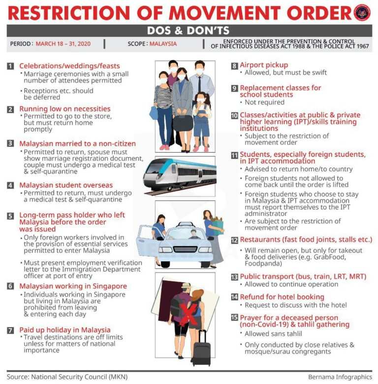

MY EXPERIENCE
MY EXPERIENCE
When the Malaysian prime minister announced the MCO, I was at UiTM campus on 17 March 2020. I was directed back home to prevent Covid-19 from infecting me. Since MCO, I have to learn from home until now. For me it is quite difficult to study online especially for the subjects that require tutorial like IMS456 subject. Although this subject is difficult, I still try to find a way to make it easier by learning it through the Youtube application. The MCO has also taught me to be self-discipline by complying with all movement control orders. I have also tried a variety of cuisines during MCO including Dalgona coffee. Finally, I really hope Covid-19 will be disappear from this world because all my plans are cancelled, especially my wedding and I have to postpone for next year.

Homepage
Biodata
Portfolio
Experience
Contact